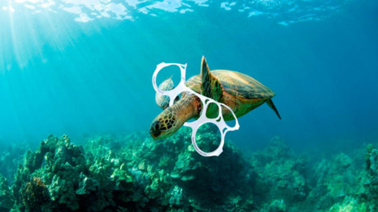

Bienvenido a Océanos Vivos
Océanos Vivos es una asociación sin ánimo de lucro dedicada a proteger los ecosistemas marinos, combatir la contaminación plástica y promover la pesca sostenible a nivel local e internacional.
Nuestra Causa: ODS 14 - Vida Submarina
El Objetivo de Desarrollo Sostenible 14 de las Naciones Unidas busca conservar y utilizar sosteniblemente los océanos, los mares y los recursos marinos. Los océanos mueven sistemas mundiales que hacen que la Tierra sea habitable para la humanidad. Protegerlos es vital para nuestro futuro.
